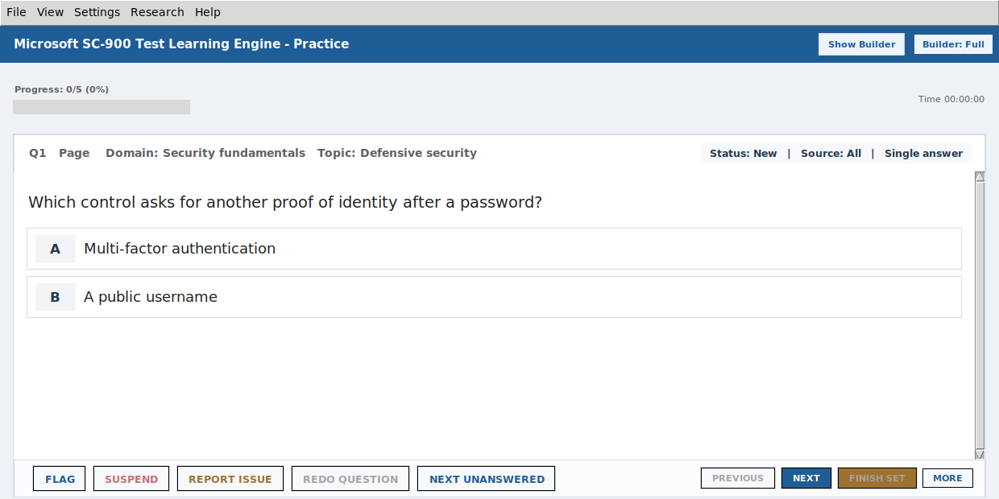

Certification Learning Engines
Independent Windows study applications for Security+ and Microsoft SC-900 preparation.
Practice, feedback, and saved learner progress in one desktop workflow.

The problem
A random question list does not tell a learner what to revisit or preserve an unfinished session. These applications combine practice with feedback, progress tracking, and review.
What I built
Python desktop tools with practice and exam-style modes, adaptive Smart Practice, confidence tracking, and session resume. The repositories include progress persistence, question-quality tooling, regression checks, and Windows packaging.
Adaptive review
Smart Practice balances weak material, due review, and new coverage. In the SC-900 spacing tests, an exact question seen less than 72 hours ago waits while an eligible alternative exists. At exactly 72 hours it becomes eligible. This is a tested scheduling rule, not evidence of improved exam scores.
Restoring the right session
Saved answers belong to question identities, not their display positions. A focused SC-900 test reorders two questions and confirms the answer stays with the correct question. Other checks reject changed bank content and quarantine an unverifiable legacy session.
Academic foundation
Completed coursework: IST 4320 Advanced Application Development and the IST 5930 Coding seminar (Fall 2024), alongside database and analytics coursework.
Scope
Independent study tools, not official CompTIA or Microsoft products. Practice scores do not guarantee a certification pass. The SC-900 interface was captured on Linux and 49 focused checks passed. Windows executable behavior and learning effectiveness were not measured for this case study.
Explore the source
The portfolio’s browser workbench is a separate demonstration, not either desktop study app.